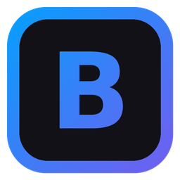

Моя программа для рабочих смен: каждая заявка, которую я начал, висит перед глазами с идущим таймером, пока я её не закрою. Плюс биндер горячих клавиш для стандартных фраз в протоколах.
На Service Desk за 12-часовую смену через руки проходят десятки заявок, а рабочая система то и дело зависает. Легко взять заявку в работу и забыть про неё до конца дня.
BINDER решает это просто: начал заявку — вписал номер. Пока она не закрыта, она висит в левой колонке, а таймер показывает, сколько она уже в работе. Ближе к концу смены программа сама напомнит, что ещё осталось.
«В работе» и «Выполнены». Номер и короткое описание, перенос галочкой или перетаскиванием, редактирование по двойному клику.
Слева время идёт и пульсирует индикатор, справа останавливается. Считается по системным часам — даже когда программа закрыта.
В заданное время всплывает окно со списком незакрытых заявок. Время настраивается, напоминание можно выключить, есть тестовый режим.
Стандартные фразы для протоколов печатаются в любое окно одним сочетанием. Раскладка не важна, буфер обмена не трогается.
Выполненные заявки уходят в файл с датой, временем взятия, закрытия и затраченным временем — готовый отчёт для руководителя.
Заявки, настройки и бинды лежат в текстовых файлах рядом с exe. Никаких серверов и аккаунтов — скопировал папку и работаешь.
Вписал номер и нажал Enter — карточка появилась в «В работе», таймер пошёл.
Стандартные фразы в протокол — через Ctrl+F1…F12, без копипаста.
Галочка на карточке — заявка уходит в «Выполнены», время фиксируется.
Напоминание покажет, что осталось, а «очистить» сохранит итоги в историю.
Первый биндер: Ctrl+F1–F12 и текстовые файлы с фразами.
Без батников, печать текста напрямую, без буфера обмена.
Заявки с таймерами, напоминание, редактор биндов, история.

Скачай exe, положи в отдельную папку и запусти. Windows может спросить про неизвестного издателя — «Подробнее» → «Выполнить в любом случае».